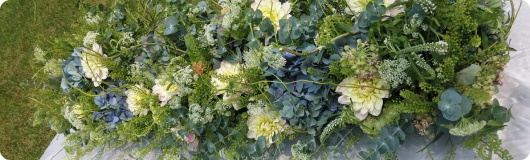

안녕하세요. UI / UX 디자이너 윤채원입니다.
이름에 담긴 의미처럼,
'채(彩)'는 경험에 의미 있는 색을 더하고,
'원(瑗)'은 본질을 다듬어
완성도를 높이는 디자이너가 되겠습니다.
Like the meaning in my name, I will add meaningful color to
experiences as "Chae (彩)",
and refine the essence to achieve lasting quality as "Won
(瑗)".
화면디자인을 전공하며 저는 형태와 균형,
그리고 그 안에서 흐르는 스택 프로를 깊게 고민해왔습니다.
공간의 흐름과 시선, 색과 구조의 조화를 다루는 경험은
자연스럽게 사용자 행동과 경험을 설계하는
UI/UX 디자인으로 이어졌습니다.
사용자의 맥락을 읽고, 불필요한 요소를 덜어내며,
본질만 남기는 과정에 익숙합니다.
이러한 감각과 사고를 바탕으로, 화면을 넘어 기억에 남는
사용자 경험을 설계하는 디자이너로 성장하고 있습니다.
CHAPTER 2: MY STORY
1996년부터 시작된 나의 이야기입니다.
작은 시작에서 큰 꿈을 향해 걸어온 여정을 담았습니다.
세상에 첫 발을 내딛은 해.
이 순간부터 나만의 이야기가 시작되었습니다.
대학교에서 화훼디자인을 전공하며 압화와 프리저브드 플라워, 대회 관련 수업, 디자인 관련 수업을 통해 디자인의 기초 감각을 쌓았습니다.

화훼 관련 대회 참여 &
압화대전 우수상과 명품꽃차 대전 입선상,
천안 아트큐브 136 전시관에
FLOWER DESIGN 작품 전시 하였습니다.
방학 기간에는 그랜드 하얏트호텔에서
플라워쪽에 일을 했습니다.
졸업 작품을 하였고 졸업 후
캐나다 벤쿠버에서 전공 관련 직장에서
일과
어학 수업과정을 들었습니다.
개인 업체 웨딩 플라워 샵
&플라워 강사 보조 일을 했습니다.
취업 후 플라워 샵에서 근무하며 실무 경험을
쌓는 동시에,
관심 있는 분야를 중심으로디자인과 관련된 다양한 공부를 병행했습니다.
이젠 아카데미에서 UI/UX 디자인과 프론트엔드를 학습하며 사용자 경험을 설계하는 여정을 본격적으로 시작했습니다.
UIUX 디자인 프론트엔드 부프캠프 과정 수료 후
UI/UX 디자인에 대한 이해와 실무 역량을 바탕으로 나만의 디자인 여정을 시작합니다.
CHAPTER 3: MY HOBBY
취미를 통해 일상을 조금 더 천천히 바라봅니다.
사진을 찍고 책을 읽고 요리하는 과정 속에서
자연스럽게
관찰하는 습관이 생겼고 이 경험들이
디자인을 생각하는
시선으로 이어집니다.
Personal Interests
필름 카메라로 순간을 천천히 담고,
패션으로 분위기와 감정을 읽으며,
요리를 통해 재료가 어우러지는 흐름을 즐깁니다.
이 작은 취미들은 제가 세상을 바라보고, 디테일을 감각하는 방식이 되었습니다.
디자인을 대하는 태도와 경험에서 쌓인 강점을 소개합니다.
마크업 & 웹 접근성
시각적인 완성도뿐 아니라,
구조적으로 올바른 마크업과 웹 접근성을 함께 고민합니다.
시맨틱 태그를 활용해 콘텐츠의 의미를 명확히 전달하고,
누구에게나 이해하기 쉬운 화면을 구현합니다.
인터랙션 중심 비주얼 디테일
인터랙션과 애니메이션을 통해
사용자 경험을 풍부하게 만들고,
직관적이고 즐거운 인터페이스를 구현합니다.
커뮤니케이션 강점
디자인 의도를 감각적인 표현에 그치지 않고,
사용자 관점과 문제의 맥락을 중심으로 명확하게 설명합니다.
기획·개발 등 다양한 직군과의 협업 과정에서 의견 차이를 조율하며,
공통의 이해를 바탕으로 더 나은 방향을 함께 만들어갑니다.
사용자 중심 문제 정의
리서치와 관찰을 통해 문제를 구조화하고,
해결해야 할 핵심을 정의한 뒤
그에 맞는 UI와 인터랙션을 설계합니다.
"사용자의 경험에 색을 더하고,
본질을 다듬는 디자이너가 되겠습니다."
Thank you.
YUN CHAEWON